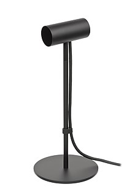
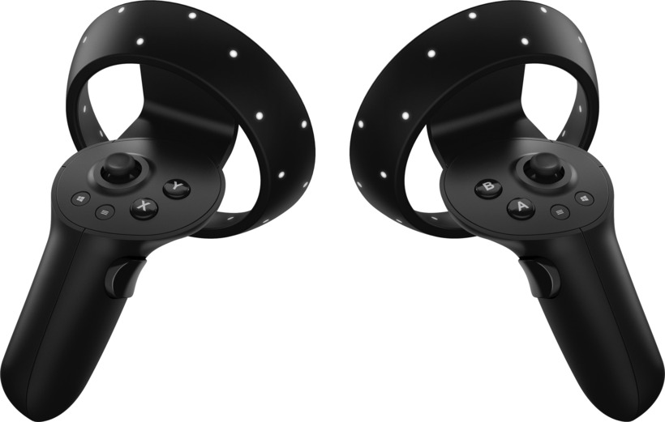
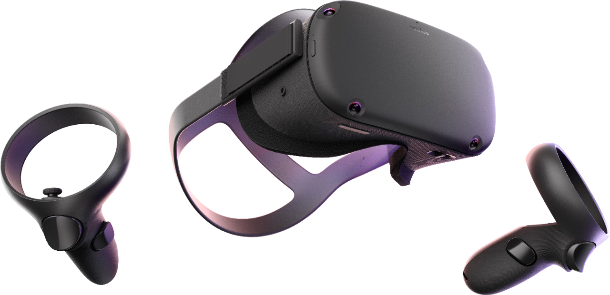

MVT • Moderní vizualizační technologie
Virtuální realita
Principy, hardware, vnímání, prostorová rozhraní a vývojové nástroje
Obsah
Co je to Virtuální realita?
Milgramovo kontinuum (XR / MR / AR / VR)
Paul Milgram a Fumio Kishino (1994) definovali plynulý přechod mezi reálným a plně virtuálním světem:
Reálné prostředí
Fyzický svět bez syntetických prvků.
Rozšířená realita (AR)
Digitální 2D/3D objekty promítané do reálného světa (opticky nebo kamerou).
Rozšířená virtualita (AV)
Virtuální svět obohacený o reálné fyzické objekty a osoby (video streams).
Virtuální realita (VR)
Plně syntetické prostředí zcela izolované od reality.
Stupně volnosti: 3-DoF vs. 6-DoF

Optika a čočky: Proč je potřebujeme?


Latence a „Motion-to-Photon“
Vnímání VR
Immersion vs. Presence
Immersion (technologie) → vyvolává pocit → Presence (psychologická přítomnost)
Vjemy a VR
Co když smysly nepasují k sobě?
Vergence-Accommodation Conflict (VAC)
Uživatelské rozhraní
3D rozhraní
Problémy s 3D rozhraním
Ukázka UI
UX a UI ve VR
Běžné akce ve 3D
Standard OpenXR
Vývojová prostředí s podporou VR
Využití VR v praxi (Mimo herní svět)
Současná zařízení
PC: HTC Vive (2016)
110° FOV
90 Hz
1080x1200 / oko (OLED)
SteamVR Tracking
- Headset:
1080×1200 na oko (celkem 2160×1200), 90 Hz, duální OLED panely.
Přední kamera (Chaperone), akcelerometr, gyroskop, proximity senzor. - Ovladače (Wands):
Prostorové sledování s přesností sub-milimetru (< 1 mm).
Aktualizační frekvence polohy 250 – 1000 Hz. - Base station (Lighthouse):
IR pulzy 60 Hz, prostor až 6 m úhlopříčně (Room-scale VR).

HTC Vive Headset & Ovladače

Base Station

Ovladač
PC: HTC Vive Pro 1, 2 (2019/21)
Vive Pro 1
- Displej: 1440×1600 na oko (celkem 2880×1600), 90 Hz, OLED
- Zorné pole (FOV): 110 stupňů
- Base station 2.0: Laser pulzy 60 Hz, prostor až 10×10 m (se 4 stanicemi)
Vive Pro Eye
- Integrované sledování pohybu očí (Eye tracking)
- Podpora Foveated rendering a analytiky pohledu
Vive Pro 2 (2021)
- Displej: 2448×2448 na oko (5K celkem), LCD
- Obnovovací frekvence: 120 Hz refresh rate
- Zpětná kompatibilita s Base station z Pro 1

HTC Vive Pro & Vive Pro Eye s integrovaným Eye Trackingem
PC: Vive Cosmos (Elite) 2019
PC: Oculus Rift (CV1)
110° FOV
90 Hz
1080×1200 / oko (PenTile OLED)
Constellation IR
- Headset:
1080×1200 na oko, 90 Hz, PenTile OLED panely, integrovaná audio sluchátka.
- Constellation senzor:
Externí infračervené kamery snímající neviditelné IR diody na headsetu a ovladačích.
Velmi nízká latence a vysoká přesnost. - Ovladače:
Původně dodáván s Xbox One gamepadem.
Následně nahrazen průlomovými ergonomickými ovladači Oculus Touch s kapacitními senzory prstů.

Oculus Rift CV1 & Ovladače Touch

Constellation IR senzor

Oculus Touch
PC: Oculus Rift S
115° FOV
80 Hz
1280×1440 / oko (Fast-LCD)
Oculus Insight 5×
- Inside-out tracking (Oculus Insight):
5 integrovaných kamer na těle headsetu – nepotřebuje externí senzory na stole.
- Ovladače:
Stejné jako Oculus Quest;
Sledování polohy pomocí kamer na headsetu. - Konektivita a hardware:
DisplayPort + USB 3.0
Vývoj ve spolupráci se společností Lenovo (Halo popruh). - Snížení SDE (Screen Door Effect):
RGB subpixelová matice LCD panelu výrazně omezila viditelnost mezer mezi pixely.

Oculus Insight – 5 kamer pro sledování okolí
PC: Valve Index
PC: HP Reverb G2
114° FOV
90 Hz
2160×2160 / oko (4K+ celkem)
WMR + SteamVR
- Headset:
Špičkový LCD panel 2160×2160 na oko (celkem 4320×2160), 90 Hz, 114° FOV.
Optika a off-ear reproduktory vyvinuté ve spolupráci s Valve. - Inside-Out tracking:
4 kamery pro sledování rotace a polohy bez externích bázových stanic.
- Platformní podpora & Stav:
Nativní Windows Mixed Reality (WMR) + SteamVR.
Microsoft WMR oficiálně ukončil ve Windows 11 - Ovladače:
Trackování pohybu pomocí kamer, napájení 4× AA bateriemi.

HP Reverb G2 – 2160×2160 na oko

WMR ovladače s LED sledováním
Konzole: PS VR (PlayStation VR)
100° FOV
90–120 Hz
960×1080 / oko (RGB OLED)
PS Camera 6× LED
- Platforma PlayStation 4 / PS4 Pro / PS5:
První masově rozšířený headset pro domácí herní konzole (přes 5 milionů prodaných kusů).
- Displej:
1920×1080 celkem (960×1080 na oko), 90–120 Hz, RGB OLED panel s nízkou perzistencí.
- Trackování pohybu:
Optické sledování 6 viditelných modrých LED diod na headsetu pomocí PlayStation Camera.
- Ovladače:
DualShock 4 gamepad nebo pohybové ovladače PlayStation Move (původem z PS3).

Sony PlayStation VR headset s tracking LED diodami
Konzole: PlayStation VR 2 (PS5)
Samostatné: Oculus / Meta Quest 1 & 2
Oculus Quest (2019)
- Nepotřebuje PC ani konzoli (zcela bez kabelů)
- Chipset: Qualcomm Snapdragon 835
- Displej: 1440×1600 / oko, 72 Hz, PenTile OLED
- Hmotnost: 571 g • Výdrž na baterie: 2–3 hodiny
Meta Quest 2 (2020)
- Chipset: Qualcomm Snapdragon XR2 (výrazně vyšší výkon)
- Displej: 1832×1920 na oko, 90–120 Hz, Fast-switch LCD
- Hmotnost: 503 g
- Podpora Oculus Link / Air Link pro PC VR
- Prodejní hit: Přes 20 milionů prodaných kusů celosvětově
